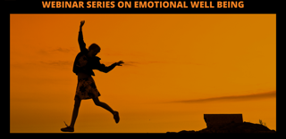

Youth Suicides and Mental Health - December 2021
Workshop by Greg Jacobson - February 2022
Suicide - Asking the Real Questions - Ms. Jenny Teo - January 2022
World Mental Health Day 2022 - October 10, 2022
Substance Addiction and Mental Health - November 2021
